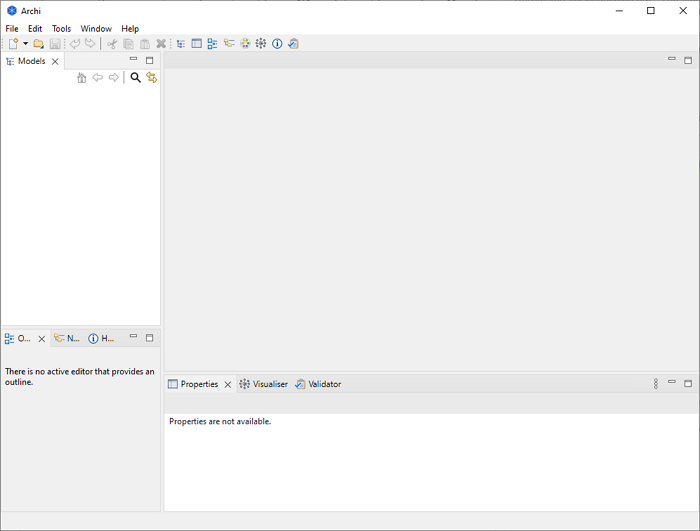
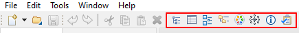

从 https://www.archimatetool.com下载所需的版本
Windows 版本有安装程序。运行安装程序将Archi安装到您的系统。支持Windows 10 64位。安装程序只需将程序文件复制到目标目录并将 *.archimate 文件与Archi相关联。还提供了一个卸载程序。
您也可以通过zip安装手动安装Archi。解压缩此文件并运行“Archi”或程序文件。还包括一些Windows批处理文件 - “RegisterFileAssociation.bat”和“UnregisterFileAssociation.bat”。这些文件中的第一个将在Windows注册表中使用Archi注册 *.archimate 文件扩展名。第二个批处理文件将注销文件关联。
Mac和Linux版本分别打包在dmg和tgz文件中。只需复制dmg或tgz下载中的文件，然后双击“Archi”应用程序文件即可启动程序。
新的空白Archi工作区如下所示：
默认归档工作区
工作区分为以下子窗口：
这些子窗口可以通过将它们拖到新位置来重新排列，或者将它们拖出主应用程序窗口以与主窗口分离。
通过从主菜单栏上的“窗口”菜单或工具栏上的按钮选择适当的菜单项，可以显示或隐藏各种窗口：
Windows 工具栏
要将Archi窗口工作区重置为其默认布局，请从主菜单的“窗口”菜单中选择“重置窗口布局”。
您可以通过从主菜单的“窗口”菜单中选择“隐藏/显示工具栏”来隐藏或显示主工具栏。